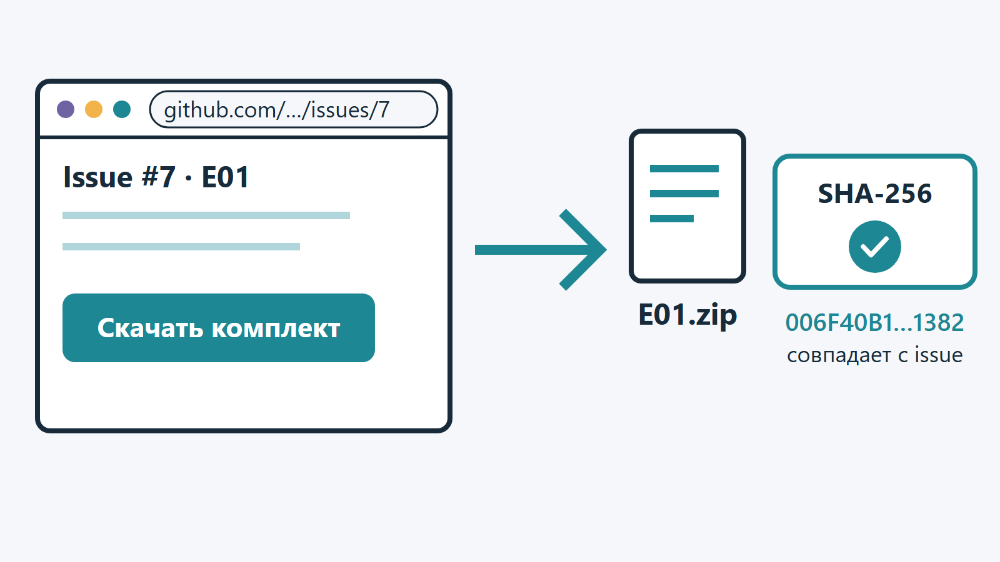
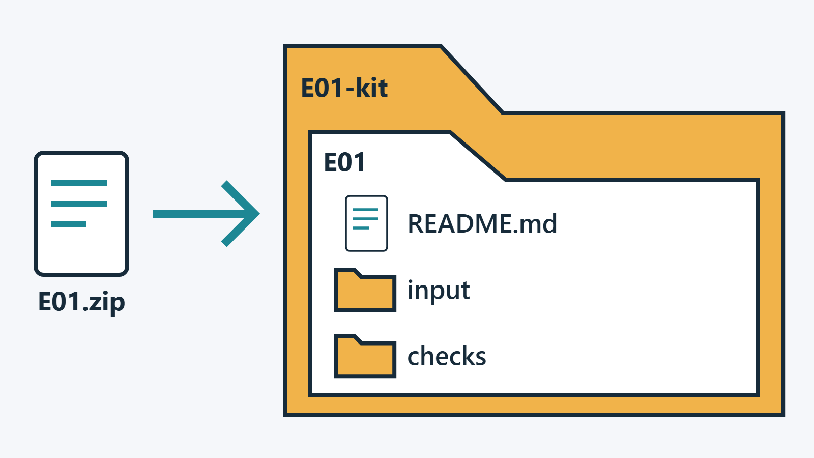
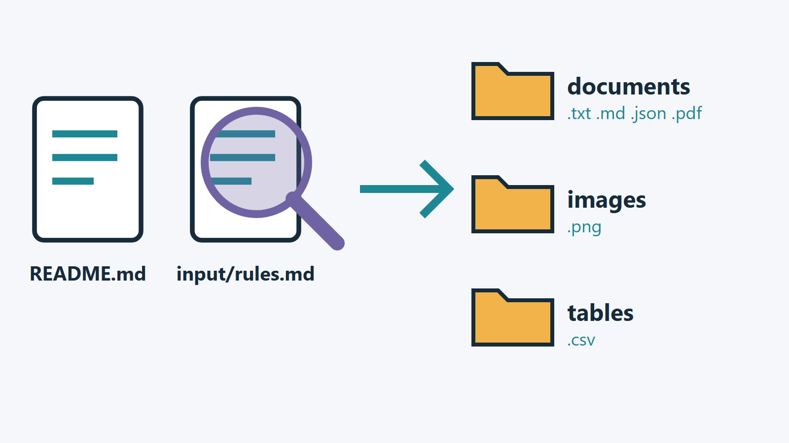
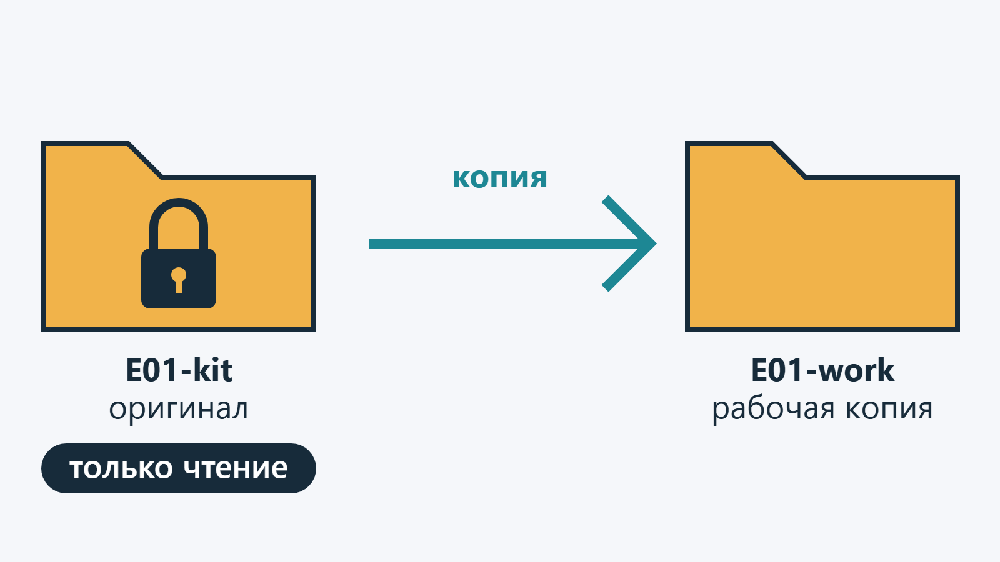
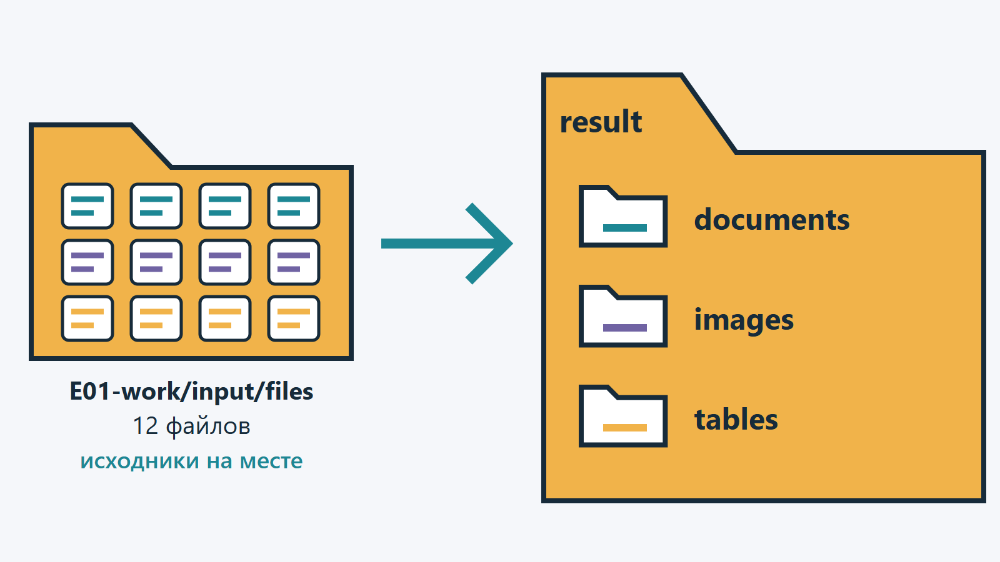
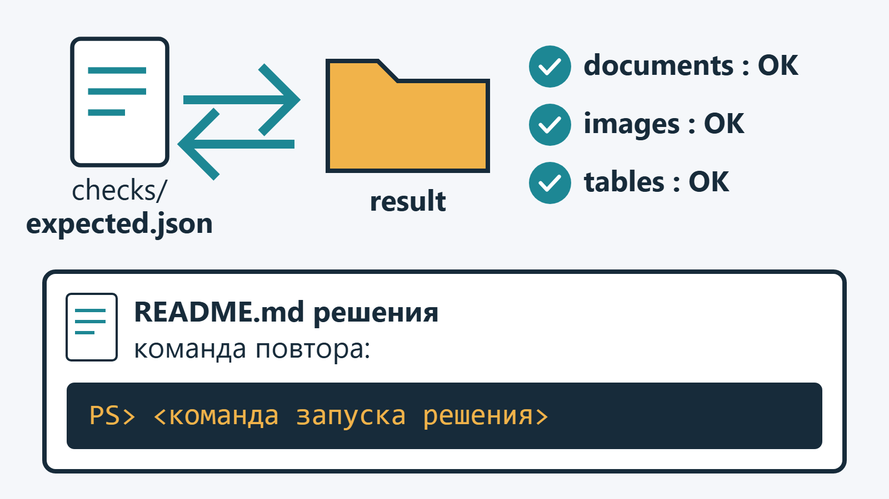

Учебный курс · руководство на примере E01
Это руководство для тех, кто впервые скачал учебный комплект. Мы пройдём весь путь на примере задания E01 «Порядок в папке»: скачаем архив, распакуем его, прочитаем условия, выполним работу на копии и проверим результат. Порядок шагов годится и для других комплектов курса.
Что понадобится:
Всё делается на своём компьютере. Не нужны SSH, удалённый сервер, облако или платные программы.
В руководстве две рабочие папки:
$HOME\Course\E01-kit — распакованный комплект, его только читаем;$HOME\Course\E01-work — рабочая копия, в ней работаем.Шесть шагов:
Команды из блоков вводи в окне PowerShell по одному блоку, в том же окне, что и предыдущие шаги: команда S2 использует переменную $zip из S1.

Зачем. Рабочий комплект — это ZIP из issue задания. Просмотр файлов на GitHub не заменяет скачивание, а SHA-256 подтверждает, что архив пришёл целым.
Сделай.
# S1
$zip = "$HOME\Downloads\E01.zip"
Invoke-WebRequest -UseBasicParsing -Uri "https://raw.githubusercontent.com/ARepnikov777/Training/22aad84cc6666d2b0abca011e95a96b12e69c9cd/downloads/E01.zip" -OutFile $zip
(Get-FileHash $zip -Algorithm SHA256).Hash # 006F40B11AB7BCFD7DF2A326D45E4D97787A940D47FBED5E39A19207F1BF1382Проверь. Команда выводит 006F40B11AB7BCFD7DF2A326D45E4D97787A940D47FBED5E39A19207F1BF1382. PowerShell пишет хеш заглавными буквами, в issue он строчными — это одно и то же значение. Размер файла — 62 162 байта.
Если не так.
E01.zip и скачай заново. С неверным архивом дальше не работай.E01 (1).zip: удали старые копии и укажи правильный путь в $zip.См. рисунок 1.

Зачем. Отдельная новая папка не смешивает комплект с другими файлами и позволяет в любой момент начать с чистого листа.
Сделай.
E01-kit.E01.# S2
New-Item -ItemType Directory -Path "$HOME\Course\E01-kit" | Out-Null
Expand-Archive -Path $zip -DestinationPath "$HOME\Course\E01-kit"
(Get-ChildItem "$HOME\Course\E01-kit\E01" -Recurse -File).Count # 17Проверь. Выводится 17. Внутри E01-kit лежит вложенная папка E01, а в ней README.md, manifest.json, checksums.json, папки input и checks.
Если не так.
E01-kit целиком и повтори шаг.$zip пуст — повтори первую строку S1.См. рисунок 2.

Зачем. README описывает задание и что сдавать, а input/rules.md задаёт точные правила. В других комплектах вместо него может быть input/SPEC.md; в E01 есть только rules.md.
Сделай.
E01-kit\E01\README.md в Блокноте или VS Code и прочитай целиком.# S3
Get-Content "$HOME\Course\E01-kit\E01\input\rules.md" -Encoding UTF8Проверь. Ты можешь пересказать правило своими словами: файлы .txt, .md, .json, .pdf идут в documents, .png — в images, .csv — в tables; папку input/files не менять; result создаётся отдельно; все 12 файлов учтены.
Если не так.
-Encoding UTF8. Повтори команду с ним.record.json или notes.md: по расширению это documents.См. рисунок 3.

Зачем. Исходники нельзя перезаписывать. Работая в копии, ты всегда можешь сравнить результат с нетронутым оригиналом и начать заново.
Сделай.
E01 из E01-kit в новую папку E01-work.E01-work, а E01-kit не трогай.# S4
Copy-Item -Path "$HOME\Course\E01-kit\E01" -Destination "$HOME\Course\E01-work" -Recurse
(Get-ChildItem "$HOME\Course\E01-work\input\files" -File).Count # 12Проверь. Выводится 12, а README.md лежит прямо в E01-work, без лишней папки E01.
Если не так.
E01-work уже была: тогда копия попадёт в E01-work\E01. Удали E01-work и повтори.См. рисунок 4.
Зачем. Задание E01 требует скрипт, который раскладывает копии файлов по категориям. Результат лежит отдельно от исходников, чтобы их можно было сверить.
Сделай.
rules.md и README.E01-work\input\files;E01-work\result\documents, result\images, result\tables;.txt, .md, .json, .pdf → documents; .png → images; .csv → tables;input\files;Готового скрипта здесь нет: решение E01 — твоя часть работы.

Проверь. В E01-work\result три папки, в каждой по 4 файла, всего 12. В input\files по-прежнему 12 файлов.
Если не так.
input\files пусто или меньше файлов: скрипт перемещал файлы. Удали E01-work, повтори S4 и замени перемещение на копирование.result: проверь сравнение расширений, например регистр букв.См. рисунок 5.
Зачем. checks/expected.json — эталон состава по категориям, а checksums.json позволяет доказать, что исходники не изменились. Команда повтора нужна, чтобы любой мог воспроизвести результат.
Сделай.
result с expected.json.checksums.json из E01-kit.result ровно 12 файлов и содержимое каждого совпадает с исходником.
# S6 — состав result по категориям
$exp = Get-Content "$HOME\Course\E01-work\checks\expected.json" -Encoding UTF8 -Raw | ConvertFrom-Json
foreach ($cat in 'documents','images','tables') {
$act = @((Get-ChildItem "$HOME\Course\E01-work\result\$cat" -File).Name | Sort-Object)
if (Compare-Object @($exp.$cat | Sort-Object) $act) { "$cat : РАСХОЖДЕНИЕ" } else { "$cat : OK" }
}
# S6 — исходники не изменились
$ref = Get-Content "$HOME\Course\E01-kit\E01\checksums.json" -Encoding UTF8 -Raw | ConvertFrom-Json
$ref.PSObject.Properties | Where-Object Name -like 'input/files/*' |
Where-Object { (Get-FileHash (Join-Path "$HOME\Course\E01-work" $_.Name)).Hash.ToLower() -ne $_.Value } |
ForEach-Object { "ИЗМЕНЁН: $($_.Name)" } # пустой вывод = исходники целы
# S6 — содержимое result совпадает с исходниками (добавлено в v1.1)
(Get-ChildItem "$HOME\Course\E01-work\result" -Recurse -File).Count # 12
Get-ChildItem "$HOME\Course\E01-work\result" -Recurse -File |
Where-Object { (Get-FileHash $_.FullName).Hash -ne (Get-FileHash "$HOME\Course\E01-work\input\files\$($_.Name)").Hash } |
ForEach-Object { "НЕ СОВПАДАЕТ: $($_.Name)" } # пустой вывод = содержимое совпадаетПроверь. Первая часть выводит три строки: documents : OK, images : OK, tables : OK. Вторая часть ничего не выводит — значит, ни один из 12 исходников не изменён. Третья часть выводит 12, а сверка содержимого ничего не выводит — копии в result побайтно совпадают с исходниками. В README решения есть блок с командой запуска и отметка о повторном прогоне.
Если не так.
РАСХОЖДЕНИЕ по категории: открой эту папку в result и сравни имена с expected.json.ИЗМЕНЁН: ...: скрипт трогал исходник. Исправь скрипт, удали E01-work и начни с S4.result\...: S5 не создал одну из категорий.НЕ СОВПАДАЕТ: ...: скрипт изменил файл при копировании (например, перекодировал текст или переписал строки). Исправь скрипт так, чтобы он копировал файл как есть, удали result и повтори S5. Ошибка «не удаётся найти путь» в этой проверке — в result лежит лишний файл, которого нет в input\files.См. рисунок 6.
E01, поэтому файлы оказываются в E01-kit\E01\..., а не в E01-kit\.... Все пути в руководстве это учитывают.-Encoding UTF8 покажет вместо кириллицы нечитаемые символы. Добавляй -Encoding UTF8 к Get-Content или открывай файлы в VS Code.E01-work. Если тронул E01-kit, удали его и распакуй архив заново (S2).Заполняй по ходу работы и сохрани вместе с README решения.
| Шаг | Что сделано | Наблюдаемый результат | ОК / замечание |
|---|---|---|---|
| S1 | SHA-256 = 006F40B1…1382 | ||
| S2 | файлов в E01-kit\E01: 17 | ||
| S3 | правило пересказано | ||
| S4 | файлов в E01-work\input\files: 12 | ||
| S5 | в result: 3 папки, 12 файлов | ||
| S6 | 3 × OK, пустой вывод сверки |